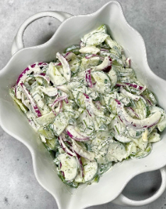

Cucumber Salad

Ingredients
- 5 Persian Cucumbers, sliced into half moons
- 1 Bunch Cilantro, chopped
- 1/2 Red Onion, sliced into half moons
- 3/4 cup Sour Cream
- 1 Tbsp Mayonnaise
- 1 Lemon, juiced
- 1 Tsp. Garlic Powder
- 1 Tsp. Onion Powder
- 1 Tsp. Dried Drill
- Salt, to taste
- Pepper, to taste
Instructions
- Cut cucumbers and onion into half moons, set aside. In a bowl, combine sour cream, mayonnaise, lemon juice, cilantro, and seasonings, mix.
- Add in your vegetables, mix again until everything is coated. Serve and enjoy.